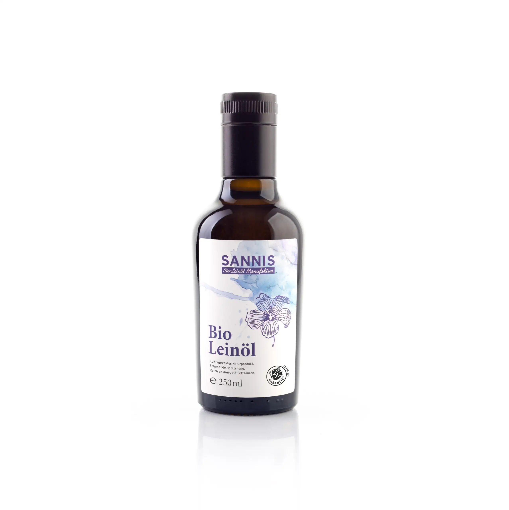

„Pflanzliches Omega 3, reicht das überhaupt, und schmeckt Leinöl nicht bitter?" Solche Fragen hören wir oft. Wir pressen seit über einem Jahrzehnt Bio-Leinöl in unserer Alpin Manufactur und haben kein Interesse daran, Ihnen etwas einzureden. Deshalb hier die ehrliche Einordnung: was pflanzliches Omega 3 wirklich kann, woher ein bitterer Geschmack tatsächlich kommt und warum frisches Leinöl für die tägliche Versorgung kaum zu schlagen ist.
● Das Wichtigste in Kürze
- Leinöl ist die Nummer eins: Mit etwa 50 bis 55 % Alpha-Linolensäure (ALA) ist Leinöl das pflanzliche Lebensmittel mit dem höchsten Omega 3 Gehalt, vor Chiasamen, Walnüssen und Rapsöl.
- Ehrlich zur Umwandlung: Der Körper macht aus pflanzlichem ALA nur begrenzt EPA und DHA (EPA ca. 5 bis 10 %, DHA meist unter 5 %). ALA hat aber auch eine eigene, anerkannte Funktion.
- Das Verhältnis zählt: Die westliche Ernährung liefert viel zu viel Omega 6. Leinöl enthält rund viermal so viel Omega 3 wie Omega 6 und hilft, dieses Verhältnis zu verbessern.
- Einfach im Alltag: 1 bis 2 EL Leinöl täglich, kalt über Salat, in Topfen oder im Müsli. Ein knapper Esslöffel SANNIS Bio-Leinöl liefert etwa 5 g ALA.
Was ist pflanzliches Omega 3?
Pflanzliches Omega 3 ist die Fettsäure Alpha-Linolensäure, kurz ALA. Sie ist essenziell, das heißt, der Körper kann sie nicht selbst herstellen und muss sie über die Nahrung aufnehmen. ALA steckt vor allem in Leinöl, Leinsamen, Chiasamen, Walnüssen und Rapsöl, und Leinöl ist davon die mit Abstand reichste Quelle.
Eine Unterscheidung hilft, Verwirrung zu vermeiden: ALA ist die pflanzliche Omega-3-Fettsäure und zugleich die einzige, die wir zwingend essen müssen. Die Formen EPA und DHA, die vor allem in fettem Seefisch stecken, bildet der Körper bei Bedarf selbst aus ALA. Für die pflanzliche Versorgung zählt also ALA, und da ist Leinöl die reichste Quelle.
Wer „pflanzliches Omega 3" sucht, meint praktisch immer ALA. Und hier liegt die gute Nachricht für alle, die ihr Omega 3 lieber genüsslich über das Essen aufnehmen, statt geschmacklose Kapseln hinunterzuschlucken: Bei ALA ist Bio-Leinöl die konzentrierteste Quelle, die die Natur zu bieten hat. Es ist das Kernprodukt unserer Manufaktur, und genau deshalb beschäftigen wir uns so genau mit dieser Frage.
Die besten pflanzlichen Omega 3 Quellen
Die reichste pflanzliche Omega 3 Quelle ist Leinöl mit etwa 50 bis 55 g ALA pro 100 g. Es folgen Leinsamen, Chiasamen (rund 18 g), Walnüsse und Walnussöl sowie Rapsöl und Hanfsamen (jeweils rund 9 bis 10 g). Wer pflanzliches Omega 3 über die Ernährung decken will, kommt an Leinöl kaum vorbei, kein anderes Lebensmittel ist so konzentriert.
In den meisten Ratgeber-Listen tauchen dieselben Kandidaten auf: Leinöl, Leinsamen, Chia, Walnüsse, Rapsöl, Hanf. Spannend wird es erst, wenn man die tatsächlichen Mengen nebeneinanderlegt. Dann zeigt sich, wie deutlich Leinöl heraussticht.
ALA-Gehalt pflanzlicher Lebensmittel (g pro 100 g)
Werte gerundet, je nach Sorte und Charge. Quelle: Nährwertdaten (Bundeslebensmittelschlüssel / Souci-Fachmann-Kraut). SANNIS Bio-Leinöl: ca. 55 g ALA pro 100 ml.
Ein wichtiger Hinweis zur Praxis: Bei ganzen Leinsamen kommt das Öl nur frei, wenn sie geschrotet sind, sonst wandern viele unverdaut durch den Körper. Wer Omega 3 lieber über Samen aufnimmt, findet bei uns auch frisch geschrotete Bio-Leinsamen. Mehr dazu lesen Sie in unserem Beitrag über geschrotete Leinsamen. Für die schnelle, konzentrierte Portion bleibt das Öl die einfachste Lösung: Ein Esslöffel ist in Sekunden über dem Essen.
Der wahre Hebel: das Omega 6 zu Omega 3 Verhältnis
Wichtiger als die reine Omega 3 Menge ist das Verhältnis zu Omega 6. Die westliche Ernährung liefert oft 10- bis 15-mal so viel Omega 6 wie Omega 3, während die Deutsche Gesellschaft für Ernährung (DGE) ein Verhältnis von höchstens 5 zu 1 empfiehlt. Leinöl enthält rund viermal so viel Omega 3 wie Omega 6 und ist damit eines der wenigen Lebensmittel, das dieses Verhältnis spürbar in die richtige Richtung verschiebt.
Omega 6 ist nicht schlecht, wir brauchen es ebenso. Das Problem ist die Schieflage: Sonnenblumen-, Distel- und viele Fertigöle liefern reichlich Omega 6, während Omega 3 im Alltag zu kurz kommt. Über die Jahre entsteht so ein Ungleichgewicht, das viele Ernährungsfachleute für relevanter halten als die absolute Omega 3 Menge allein.
Omega 6 zu Omega 3 im Vergleich
Richtwerte, gerundet. Verhältnis Omega 6 zu Omega 3. Quellen: Referenzwerte der Deutschen Gesellschaft für Ernährung (DGE), UGB. Leinöl je nach Charge.
Das ist der eigentliche Grund, warum ein täglicher Esslöffel Leinöl so viel bringt: Er fügt nicht nur Omega 3 hinzu, er gleicht ein Übergewicht an Omega 6 aus, das sich sonst durch die Ernährung zieht. Keine Kapsel und kein Konzentrat leistet das auf dieselbe natürliche Weise, weil sie das tägliche Speiseöl nicht ersetzen.

SANNIS Bio-Leinöl extra nativ, 250 ml
Etwa 55 % pflanzliches Omega 3 (ALA) · kaltgepresst unter 29 °C · Austria Bio (AT-BIO-301) · mild, nussig, nicht bitter.
Wie viel Leinöl pro Tag?
Ein bis zwei Esslöffel Leinöl pro Tag (etwa 10 bis 20 ml) sind eine gute Richtgröße. Die Deutsche Gesellschaft für Ernährung (DGE) und die Europäische Behörde für Lebensmittelsicherheit (EFSA) empfehlen für ALA rund 0,5 % der täglichen Energiezufuhr, also ungefähr 1,1 bis 1,6 g. Diese Menge ist mit einem knappen Esslöffel SANNIS Bio-Leinöl bereits erreicht, denn ein Esslöffel (ca. 10 ml) liefert etwa 5 g ALA.
In der Praxis heißt das: Schon ein Esslöffel über dem Mittag- oder Abendessen deckt die empfohlene ALA-Menge locker ab. Damit ist auch die Schwelle erreicht, ab der nach EU-Recht zu Alpha-Linolensäure ausgesagt werden darf: „Alpha-Linolensäure trägt zur Aufrechterhaltung eines normalen Cholesterinspiegels im Blut bei." Diese Wirkung stellt sich bei einer täglichen Aufnahme von 2 g ALA ein, eine Menge, die ein knapper Esslöffel Leinöl bereits abdeckt. Dass pflanzliches ALA in der Ernährung mehr Gewicht verdient, als das Kapsel-Marketing oft nahelegt, zeigt sich auch daran, dass sich unabhängige Prüfer wie die Stiftung Warentest mit Leinöl als Omega 3 Quelle beschäftigt haben. Mehr als zwei Esslöffel braucht es im Alltag selten, wichtig ist die Regelmäßigkeit.
Ein Wort zur Verwendung, weil hier die meisten Fehler passieren: Leinöl gehört nicht in die Pfanne. Die empfindlichen Omega 3 Fettsäuren reagieren auf Hitze, der Rauchpunkt liegt bei etwa 60 Grad. Leinöl entfaltet seinen Wert kalt, über Salat, in Topfen oder Joghurt, im Müsli, im Smoothie oder über die fertig gekochte Mahlzeit. Zum Braten nehmen Sie hitzestabile Öle wie Kokos- oder Rapsöl.
Woran man gutes Bio-Leinöl erkennt
Gutes Leinöl erkennt man an Frische, schonender Pressung und Herkunft. Es sollte kaltgepresst (unter etwa 30 Grad) und frisch sein, mild und nussig schmecken statt bitter, in lichtgeschützter Flasche stecken und eine nachvollziehbare Bio-Zertifizierung tragen. Bitteres oder kratziges Leinöl ist meist alt oder zu heiß gepresst und gehört nicht mehr in die Küche.
Leinöl ist so wertvoll wie empfindlich. Genau die ungesättigten Fettsäuren, die es ausmachen, reagieren auf Sauerstoff, Licht und Wärme. Deshalb trennt sich an der Verarbeitung die Spreu vom Weizen. Worauf es ankommt:
- Schonende Kaltpressung: Wird zu heiß gepresst, entstehen Bitterstoffe und die Omega 3 Fettsäuren leiden. Wir pressen in der Manufaktur langsam unter 29 Grad, im Slow-Press-Verfahren.
- Frische und kurze Wege: Leinöl schmeckt frisch mild, fein-nussig und cremig. Kleine Chargen und schnelle Abfüllung halten es frisch, statt es monatelang im Lager altern zu lassen.
- Lichtschutz und guter Verschluss: Lichtundurchlässige Flaschen und ein dichter Verschluss halten Licht und Sauerstoff fern. Unsere Flasche mit patentiertem Spezialverschluss hält das Öl nach dem Öffnen bis zu sechs Monate frisch.
- Nachvollziehbare Herkunft: Unser Leinöl ist Austria Bio zertifiziert (AT-BIO-301), aus kontrolliert biologischer Leinsaat von langjährigen Partnern. Bio heißt hier ohne Gentechnik und ohne synthetische Pflanzenschutzmittel.
Der häufige Einwand „schmeckt Leinöl nicht bitter?" hat genau hier seinen Ursprung. Bitteres Leinöl ist ein Zeichen für mangelnde Frische oder zu heiße Pressung. Frisches, schonend gepresstes Bio-Leinöl schmeckt mild, das ist kein Zufall, sondern eine Frage der Sorgfalt. Wer mehr über unsere Analyse und Qualität wissen möchte, findet Details in unserer wissenschaftlichen Analyse.
So bringt man Leinöl in den Alltag
Am einfachsten gelingt die tägliche Portion Leinöl in der kalten Küche: 1 bis 2 Esslöffel über Salat, in Topfen oder Joghurt, ins Müsli, in den Smoothie oder über die fertige Mahlzeit. Der Klassiker ist die Kombination mit Topfen, etwa in der Budwig-Creme. Wer Abwechslung mag, greift zu den mit echten Bio-Gewürzen verfeinerten Sorten, die den gleichen ALA-Gehalt liefern, geschmacklich aber Schwung bringen.
Damit die tägliche Portion nicht zur Pflichtübung wird, hier die alltagstauglichsten Wege, Leinöl unterzubringen:
- Über die fertige Mahlzeit: ein Esslöffel über Kartoffeln, Gemüse, Nudeln, Reis, Fisch oder Fleisch, nach dem Kochen, nicht währenddessen.
- Im Frühstück: in Topfen, Joghurt, Quark oder ins Müsli gerührt. Die klassische Budwig-Creme verbindet Topfen und Leinöl, Rezepte dazu finden Sie in unserem Rezepte-Hub.
- Im Salatdressing: pur oder gemischt mit etwas Olivenöl, dazu Essig, Senf, Salz und Pfeffer.
- Im Smoothie: ein Esslöffel macht ihn cremiger und ergänzt das pflanzliche Omega 3, ohne den Geschmack zu dominieren.
Eine Besonderheit unserer Manufaktur sind die mit echten Bio-Gewürzen verfeinerten Leinöle. Über ein eigenes Verfahren bei der Beimengung der Gewürze geben wir ausschließlich Bio-Gewürze wie Zimt, Chili, Kurkuma oder Ingwer ins Öl, deren Geschmack sich auf der milden Leinöl-Basis besonders schön entfaltet. Der Nutzen bleibt gleich, der Geschmack wird zur Abwechslung. So wird aus dem täglichen Löffel eher Genuss als Routine, ein kleiner, aber entscheidender Unterschied, wenn man etwas wirklich jeden Tag machen will. Alle Sorten finden Sie in der Bio-Leinöl-Kategorie.
Pflanzenkraft für jeden Tag 🌿
Ernährungstipps rund um Bio-Leinöl und Omega 3, Rezeptideen aus der Manufaktur und exklusive Specials, direkt in Ihre Inbox.
Häufige Fragen zu pflanzlichem Omega 3
Ist Leinöl eine gute pflanzliche Omega 3 Quelle?
Ja. Leinöl ist mit etwa 50 bis 55 % Alpha-Linolensäure (ALA) das pflanzliche Lebensmittel mit dem höchsten Omega 3 Gehalt, noch vor Chiasamen, Walnüssen und Rapsöl. ALA ist eine essenzielle Omega 3 Fettsäure, die der Körper nicht selbst bilden kann und über die Nahrung aufnehmen muss. Ein knapper Esslöffel SANNIS Bio-Leinöl liefert etwa 5 g ALA.
Wird ALA aus Leinöl in EPA und DHA umgewandelt?
Ja, zum Teil. Der Körper nimmt ALA über die Nahrung auf und bildet daraus bei Bedarf die weiteren Omega 3 Formen. Den pflanzlichen Omega 3 Bedarf deckst du mit Leinöl als reichster pflanzlicher Quelle bestens.
Ist Leinöl ein Ersatz für Fischöl?
Leinöl ist die reichste pflanzliche Omega 3 Quelle und liefert reichlich ALA, die Omega 3 Fettsäure, die der Körper über die Nahrung aufnehmen muss. Für die tägliche pflanzliche Omega 3 Versorgung reichen 1 bis 2 Esslöffel Leinöl. Fisch liefert ergänzend andere Omega 3 Formen, für die pflanzliche Grundversorgung ist er aber nicht nötig.
Wie viel Leinöl pro Tag für Omega 3?
Ein bis zwei Esslöffel Leinöl pro Tag (etwa 10 bis 20 ml) sind eine typische Portion. Die Deutsche Gesellschaft für Ernährung (DGE) und die Europäische Behörde für Lebensmittelsicherheit (EFSA) empfehlen für ALA etwa 0,5 % der täglichen Energiezufuhr, das entspricht ungefähr 1,1 bis 1,6 g. Diese Menge ist mit einem knappen Esslöffel Leinöl bereits erreicht. Leinöl wird ausschließlich kalt verwendet und nicht erhitzt.
Reicht Leinöl als pflanzliche Omega 3 Quelle?
Für die tägliche Omega 3 Versorgung über die Ernährung ist Leinöl ideal. Schon ein knapper Esslöffel deckt die von der Deutschen Gesellschaft für Ernährung (DGE) und der Europäischen Behörde für Lebensmittelsicherheit (EFSA) empfohlene ALA-Menge. Leinöl ist ein vollwertiges Lebensmittel mit dem höchsten pflanzlichen Omega 3 Gehalt, kein Präparat, und lässt sich einfach in Salat, Topfen oder Müsli einbauen. Das ist die natürlichste Art, pflanzliches Omega 3 in den Alltag zu bringen.
Welches pflanzliche Lebensmittel hat am meisten Omega 3?
Leinöl liegt mit etwa 50 bis 55 g Alpha-Linolensäure pro 100 g klar an der Spitze. Es folgen Leinsamen, Chiasamen (rund 18 g), Walnüsse und Walnussöl sowie Rapsöl und Hanfsamen (jeweils rund 9 bis 10 g). Unter den pflanzlichen Omega 3 Quellen ist Leinöl damit die konzentrierteste.
Kann man den Omega 3 Bedarf vegan mit Leinöl decken?
Den Bedarf an pflanzlichem Omega 3 (ALA) deckt man mit Leinöl sehr gut, schon ein knapper Esslöffel täglich liefert die von der Deutschen Gesellschaft für Ernährung (DGE) und der Europäischen Behörde für Lebensmittelsicherheit (EFSA) empfohlene Menge. Damit ist Leinöl die einfachste und konzentrierteste pflanzliche Omega 3 Quelle für eine vegane Ernährung, ganz ohne Kapseln.
Darf man Leinöl erhitzen?
Nein. Leinöl wird ausschließlich kalt verwendet. Die empfindlichen Omega 3 Fettsäuren reagieren auf Hitze, der Rauchpunkt liegt bei etwa 60 Grad. Leinöl passt über Salate, in Topfen oder Joghurt, ins Müsli, in Smoothies oder über fertig gekochte Speisen. Zum Braten eignen sich hitzestabile Öle wie Kokos- oder Rapsöl.
Fazit: Leinöl ist die ehrlichste Omega 3 Quelle
Pflanzliches Omega 3 aus Leinöl ist eine der wertvollsten und zugleich einfachsten Quellen, die die Küche zu bieten hat. Wenn es einen Vorbehalt gibt, dann den Geschmack: Viele kennen Leinöl als bitter. Das liegt aber nicht am Leinöl selbst, sondern an zu heiß und zu schnell gepresster Massenware, oder daran, dass man Omega 3 nur als geschmacklose Kapsel kennt. Frisch und schonend unter 29 Grad gepresst schmeckt Leinöl mild und fein-nussig, und liefert dabei den höchsten pflanzlichen Omega 3 Gehalt aller Lebensmittel.
Unser Anspruch in der Manufaktur ist genau dieser: ein frisches, mild schmeckendes Bio-Leinöl, schonend gepresst, ehrlich kommuniziert. Ein Esslöffel am Tag, kalt über das Essen, ist die einfachste Art, Ihrer Ernährung pflanzliches Omega 3 zu schenken. Probieren Sie es ein paar Wochen lang und schmecken Sie den Unterschied, den echte Frische macht.
Jetzt frisches Bio-Leinöl sichern
SANNIS Bio-Leinöl extra nativ, 250 ml · etwa 55 % pflanzliches Omega 3 (ALA) · kaltgepresst unter 29 °C · 100 % vegan · versandkostenfrei in AT & DE. Auch als 500-ml-Flasche erhältlich.